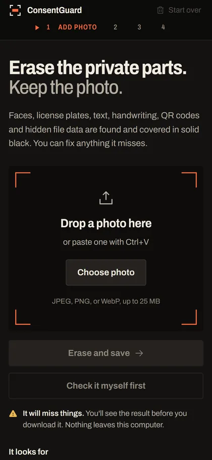

Erase the private parts. Keep the photo.
ConsentGuard finds faces, number plates, text, handwriting, QR codes and barcodes in a photo, covers them with solid black, strips the GPS and camera data, and writes you a clean copy. It runs on your own computer. Nothing is uploaded.
Windows laptop · Python environment · no account, no network calls


Four steps, and you look at the result
These are real screens from the app, running the real detectors on the parcel photo above.

01Add a photo
Drop it, paste it with Ctrl V, or pick a file. The list of things to look for sits in plain sight, so you can switch off anything you don't want covered.

02It looks through the photo
Detectors run over the whole picture, then a second, closer pass over small areas. Big photos take longer. The photo never leaves the machine.

03Check what gets covered
Hatched areas become solid black in the saved file, so the preview is the result. Paint over anything it missed, or erase anything that doesn't need hiding.
- B brush · E eraser · L loupe · H move
- Ctrl Z undo · [ ] brush size · scroll to zoom

04Save, then look before you share
The file is written from scratch, re-opened, and scanned again for anything left readable. Every check is listed in plain words, and the reminder to look at the photo sits right next to the download button.
It will miss things
Detection is automatic and never complete. The app says which content types it is bad at instead of pretending otherwise, and you are the last check.
| Content | Private pixels covered | Whole regions caught |
|---|---|---|
| Faces | 99.8% | 95% |
| Number plates | 95.4% | 56% |
| Whole people | 94.8% | 83% |
| Nudity | 93.4% | 33% |
| Signatures | 65.8% | 23% |
| Medicine, documents | 52.1% | 7% |
| Handwriting | 48.5% | 50% |
| QR codes, barcodes | A decoder, not a model: reliable | |
| GPS, camera data | Always removed; the file is written from scratch | |
Across everything labelled private, 83% of those pixels get covered (95% confidence interval 78–87%). "Whole regions caught" counts regions where at least half the region ended up covered.
What it checks on the saved file
- Opens as a normal imageRe-opened at full size without errors
- Written as a new fileEncoded from scratch and unchanged since
- Location and camera dataNone left in the file
- Readable text, QR codes, faces, platesThe saved file is scanned again for each of them
Run it on your machine
Windows with PowerShell. The first run sets up the Python environment; after that, one command starts it.
-
Get the code
git clone https://github.com/Nikhi00718/consent-guard.git cd consent-guard
-
First-time setup, if the Python environment does not exist yet
powershell -ExecutionPolicy Bypass -File main_project\scripts\stage_02_baseline_model\setup_environment.ps1
-
Start it. The detectors load in about a minute, then it opens at http://127.0.0.1:7860
powershell -ExecutionPolicy Bypass -File main_project\scripts\stage_05_review_export\start_consentguard.ps1
-
Optional: make a desktop shortcut, once
main_project\scripts\stage_05_review_export\create_desktop_shortcut.ps1
